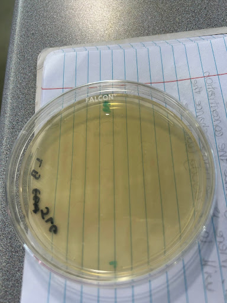
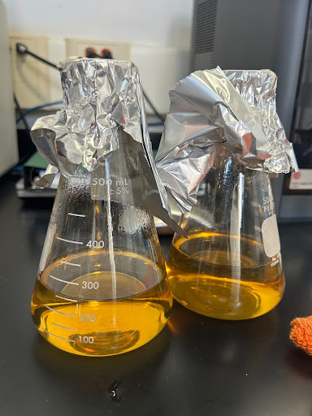
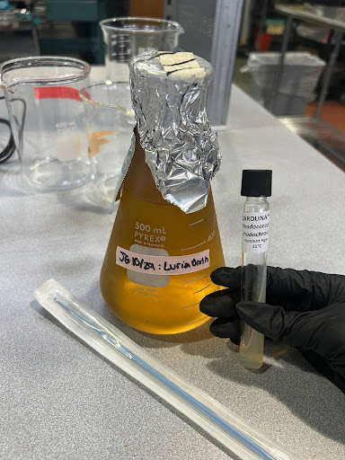
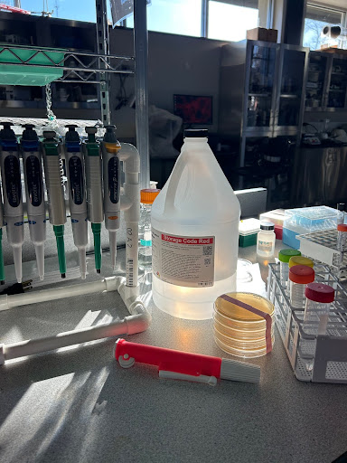
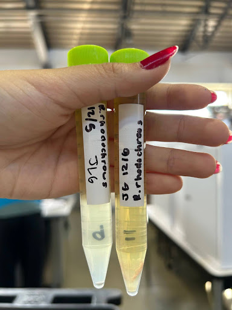
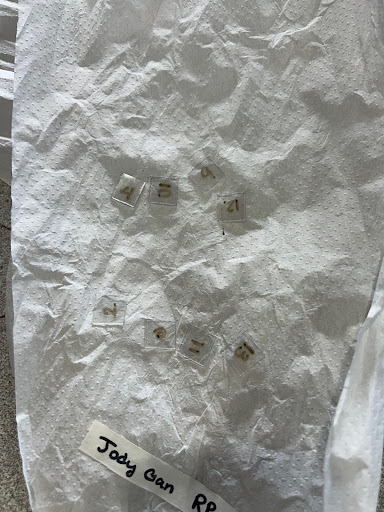

Step |
Description |
Images |
|---|---|---|
1 |
Create agar plates & prepare plastic samples |
 |
2 |
Create Luria Broth (LB) |
 |
3 |
Inoculate broth with R. rhodochrous |
 |
4 |
Treat bacteria culture with alcohol |
 |
5 |
Add plastic sample to the culture |
 |
6 |
Gather results |
 |